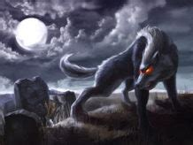

El Gualipote is a dog-like creature and El Lugaru or El Zangano are flying creatures. The legend says that they are men who can change into animals and then back to human form at will. El Galipote and El Lugaru, both of these legendary magical creatures can change form. They are men who can become animals and become men again. Galipote can also become inanimate objects, like tree trunks and stones. He can transfer his desires to animals and in this way can make the animal do his wishes. According to the belief, galipotes are cruel and violent. They are very strong. Bullets do not hurt these creatures. It is said they like to cause havoc by frightening people traveling in the night. They do not permit the person to pass and also can help people to get hopelessly lost. It is difficult not to find a Galipote when traveling in the country. It is wise, just in case, to carry a protective amulet and to cross yourself often to protect yourself from these beings.  Galipote can become a dog. This dog-galipote is called a Lugaru from the French word that means Man-Wolf. It can also fly like a bird. These high-flying, nocturnal birds are called zangano or zancu. It is said that this legendary being sucks the blood of the children during the nights and will also have sexual activities with infants. It can also become invisible. The only way to kill one of these beings is to get a branch and make a palo de cruz / wooden cross. This wood can only be cut on Good Friday. Some say you must use a knife or machete that has been blessed with water and salt. There still are Galipotes (also spelled Gualipotes) in existence according to some of the residents of San Juan de la Maguana located in the southern part of the country. Families tell stories of how relatives were known Galipotes. To become a Galipote one must make a pact with the devil himself, selling their soul for the ability to change one’s self into another form. A witch doctor is also able to help transform a human into this evil creature. There are recent stories coming from the Palma Sola Massacres of 1962 that says the survivors of this massacre were Galipotes. They were able to change themselves into elements of the environment such as rocks, trees, or animals. In this way the soldiers were not able to see them to eradicate them and thus came about their survival. Parents to this day scare their children with tales of these people that can change their shape at will. “If you be bad and don’t listen a Galipote will get you!” So, when you are roaming in the campo at night, be sure to carry your wooden cross with you at all times. Better yet, just don’t be traveling in the campo after dark. You may never find your way home…..